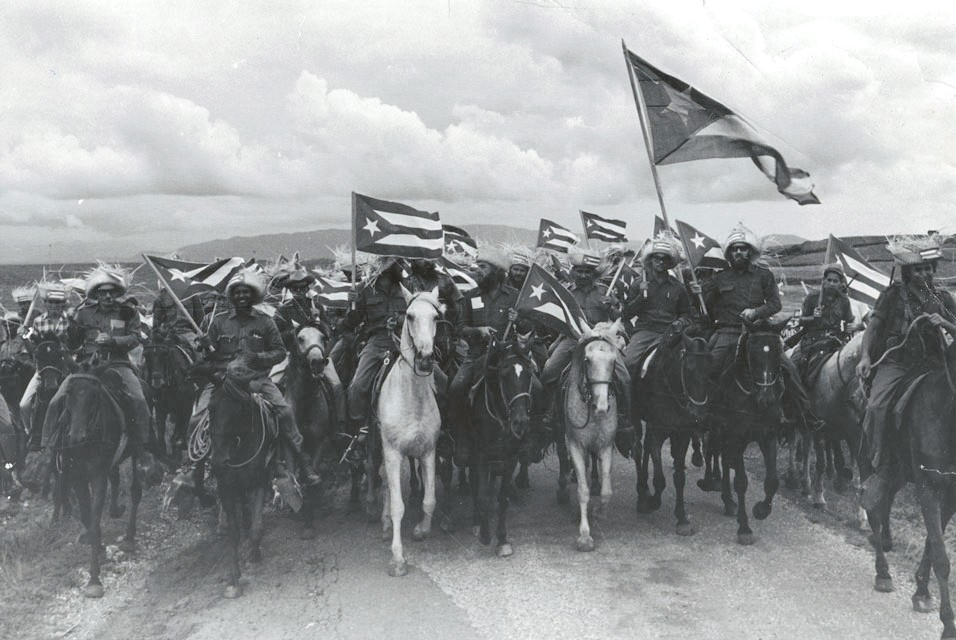

Contextualização da Reforma
Sucintamente, a primeira lei da reforma agrária cubana foi um movimento contra o subdesenvolvimento, que por sua vez ainda durou por muito tempo no período revolucionário. A reforma agrária atacou o “coração” do poder do império Americano, que tinha uma relação de controle muito grande da economia cubana, ou melhor dizendo, sob a plantation. O desígnio era atacar a classe latifundiária dos apoiadores do governo ditatorial de Fulgêncio Batista.
Até esse ponto seria interessante notar que a reforma agrária não significa a implantação do socialismo, que aliás, foi proclamado só depois. Não custa lembrar que outros processos revolucionários da era burguesa, nos grandes países capitalistas, também fizeram reformas agrárias, isto é, criaram mecanismos de fragmentação fundiária com a criação de pequenos proprietários, esse foi o caso da França revolucionária, por exemplo. No caso dos Estados Unidos, as terras indígenas do oeste foram inicialmente “doadas” para os colonos, na verdade tais territórios foram expropriados pela ação do exército. Outro país em que houve distribuição de terras foi a Alemanha. Com o caso da Inglaterra foi diferente, por lá o campesinato foi rapidamente expropriado (terras estatais e da igreja) por meio da política de cercamentos, resultando num controle agrário muito maior, voltado para o capitalismo agrário plenamente desenvolvido.
Dessa forma, a reforma agrária, no sentido da fragmentação da estrutura fundiária, significou o caminho que muitos dos países capitalistas já haviam feito para consolidação do Estado-Nação, ou seja, a pauta de uma reforma agrária redistributiva não significa necessariamente adesão ao socialismo num primeiro momento:
A princípio, como se vê, a reforma agrária era apenas uma reforma estrutural. As diretrizes econômicas que viabilizariam esta ruptura não apresentavam tantas discrepâncias em relação ao programa de reformas estruturais da própria CEPAL, como constatou inúmeras vezes Carlos Rafael Rodriguez: substituir importações diversificando a agricultura, incrementar exportações industrializando a agricultura e criar um mercado interno através da redistribuição da renda nacional, com vistas à futura industrialização do país (VASCONCELOS, 2016, p. 108).
É preciso compreender, no entanto, que pela natureza da exploração neocolonial, conforme se desenhou na estrutura econômica da plantation moderna, não havia espaço para uma agenda de reformas redistributivas ou igualitaristas sem que se deixasse de tocar no vespeiro dos interesses dos EUA. Essa é a grande particularidade da revolução burguesa no mundo colonial. É válido lembrar que o rompimento diplomático com o regime cubano foi unilateral, partiu dos EUA. Após diversas tentativas frustradas de derrubar o processo revolucionário através de incontáveis atos de sabotagem e terrorismo de Estado, com ações encobertas da CIA, paulatinamente o processo revolucionário em Cuba foi sendo empurrado àquele lado do pólo da guerra fria que acenou positivamente aos desígnios gerais da luta pela libertação.
A declaração do caráter socialista da revolução, portanto, é tardio, tal como a associação ao bloco soviético. Mais tarde muita tinta será gasta na tentativa de compreender os efeitos gerados pela conexão de Cuba com o bloco soviético. Falou-se inclusive de uma nova relação de dependência com a URSS. Vasconcelos é uma das autoras que pondera a esse respeito, para ela o novo alinhamento internacional não seria equivalente a relação neocolonial estabelecida com os Estados Unidos, afinal, a relação com os EUA só dava benefício aos Estados Unidos, já as relações entre Cuba e União Soviética foram diferentes. A concessão de ajuda técnica, transferência de tecnologia, os pactos comerciais vantajosos, enfim, inúmeros são os exemplos de instrumentos que ampliaram a manobra em busca do desenvolvimento. Por motivos de uma estabilidade de custos ofertados pela União Soviética, por exemplo, o abastecimento de petróleo ficou com um valor fixo e garantido até 1989.
O processo de expropriação da revolução no campo foi acelerado, por conta de uma parcela dos latifundiários rapidamente terem saído das propriedades, de volta aos Estados Unidos, alguns deixaram suas terras na esperança de voltarem sob a guarida de uma retomada dos EUA em ofensiva contra a revolução, o que não foi o caso. Os agricultores que ficaram em Cuba conseguiram realizar a expropriação com mais facilidade. As grandes parcelas de terra que estavam nas mãos dos latifundiários, nacionais ou estrangeiros, foram redistribuídas em duas formas gerais de propriedade: as propriedades individuais ou as cooperativas coletivas. A distribuição de terras proporcionou uma estrutura fundiária mais equilibrada, redesenhando o enorme desequilíbrio anterior no qual apenas 1,5% das famílias tinha sob controle cerca de 50% das terras:
Primeira lei de Reforma agrária de maio de 1959. Por meio da qual foi erradicado o latifúndio e a propriedade estrangeira sobre bens rústicos; foram suprimidas todas as formas de posse não proprietária; e a propriedade da terra foi entregue a quem a trabalhava, beneficiando mais de 100 mil camponeses. Após sua aplicação, em condições de aguda luta interna e externa, originou-se um setor nacionalizado da agricultura, administrado por meio do estado, que compreendia 33%das terras do país. (VALDÉS PAZ, 2011, p. 75).
Em síntese, a lei de Reforma Agrária de 17 de Maio de 1959 preconizou o fim do latifúndio e o direito à propriedade da terra para quem efetivamente trabalhava a terra. As propriedades maiores que 30 caballerías foram proibidas. Foram mantidas apenas as propriedades quem se comprovassem produtivas. Mas em nenhuma situação foi permitida a marca superior a 100 caballerías.
É válido ressaltar que muitas cooperativas, no inicio da primeira reforma agrária, ainda contavam com mais de 100 caballerias, e eram destinadas em sua maioria só para a produção de cana-de-açúcar. Ainda era nítida uma desigualdade fundiária muito grande. Segundo Chonchol, em entrevista concedida à Joana Salem Vasconcelos: “Fidel Castro, que é um pouco romântico, disse: as cooperativas de cana são estruturas que aumentam a desigualdade, assim como as cooperativas em geral.” (Vasconcelos, 2012, p. 04).
A desigualdade propriamente apresentada ocorria devido ao fato da existência de diferenças de fertilidade do solo, pois havia quem dispusesse de solos muito férteis e tecnicamente aptos para a produção de sucesso, e outros que viviam em terras não tão férteis onde, por consequência, poderiam acabar não dispondo de um nível de produção satisfatório. Nesse sentido são criadas “as granjas do povo”, fazendas coletivas comandadas pelo Estado, visando diversificar a economia:
Começaram a converter as cooperativas de cana e as novas expropriações em Granjas do Povo, que eram enormes extensões de terra, de 30 ou 40 mil hectares, onde se queria cultivar um pouco de tudo: cana de açúcar, gado, oleaginosas, vegetais etc. Isso me pareceu absurdo porque não tinham capacidade administrativa. Primeiro, a agricultura é muito instável. Não se sabe como fustigar, porque isso depende do clima, que não é controlado pela natureza humana. (Idem, 2012, p. 04).
Cabe salientar que as granjas do povo ocasionaram sérias preocupações administrativas, principalmente pelo tamanho, a administração das mesmas era complexa. Chonchol, por sua vez, foi um importante crítico do sistema, e ressaltou que as granjas eram áreas denominadas como complexas e isso ocasionava ainda mais desigualdade nas condições de produção das terras. Alguns críticos, entre eles o citado Chonchol, mas também Carlos Rafael Rodrigues, acabam por propor uma estrutura mista de organização produtiva, mesclando cooperativas e pequenas propriedades. O debate teórico em torno da forma da organização produtiva do campo foi classificado por Vasconcelos como “pequeno debate agrário”, em referência a outro debate que se abriu logo depois que disputou a forma de organização da economia cubana como um todo. A disputa sobre o papel das empresas públicas e privadas tomou boa parte desse debate. Enquanto se esperava o desenrolar do problema do “pequeno debate agrário”, Fidel apontou uma proposta mediadora:
E Fidel disse: “Não! Por nenhum motivo! Serão todos inimigos da revolução. Dar-lhes-emos não apenas a terra que já possuem, como também os títulos de propriedade, para que sigam sendo pequenos agricultores. E para organizá-los, vamos criar a ANAP – a Associação Nacional de Agricultores Pequenos”. (2012, p. 05).
Nesse período então é criada a Associação Nacional dos Pequenos Agricultores (ANAP), com o intuito de manter a organização e diálogo com os pequenos proprietários de terras que foram surgindo juntamente às grandes fazendas estatais:
Até o dia 10 de maio de 1961 o Departamento Legal do INRA, de acordo com o disposto na Lei da Reforma Agrária havia entregado gratuitamente aos camponeses mais pobres 31,425 Títulos de propriedade de outras muitas parcelas de terras que não ultrapassava de duas caballerias. Texto traduzido (INRA, 1961, p. 05).
A segunda lei da reforma agrária, declarada em 3 de Outubro de 1963, foi de certa maneira uma resposta aos dilemas da primeira reforma. Aquelas cooperativas criadas na primeira lei que apresentaram baixa capacidade produtiva foram transformadas definitivamente em granjas estatais. É importante destacar alguns artigos dessa lei: o artigo 1 nacionalizou as propriedades de até 5 cabellerias (67 hectares). O artigo 5 previa que os proprietários atingidos pelo efeito do primeiro artigo, que morassem em suas casas rurais e não dispusessem de outra residência, poderiam continuar vivendo em suas propriedades, se assim desejassem, isto é, teriam que conviver com a granja estatal vizinha às suas casas. (Vasconcelos, 2016, p.188). Com o fim das duas reformas agrárias em 1962, tem-se transformações substantivas para o setor estatal cubano, que passou a controlar cerca de 44% das terras, o restante, 56% estava sob controle do setor privado (Cooperativas e ANAP), como pode-se observar na tabela 2 na página seguinte
O principal efeito social realizado pela segunda lei da reforma agrária foi o desmoronamento do que restava da plantation modernizada, elimina-se o latifúndio e sua conformação capitalista: “Do ponto de vista histórico, a eliminação da burguesia rural foi a consequência mais importante da segunda reforma agrária.” (VASCONCELOS, 2016, p.194).
Um dia após Fidel Castro ter assinado a segunda Lei de reforma agrária, acontece um desastre na ilha, chamado de ciclone flora, que devastou durante 9 dias a ilha, trazendo prejuízos gigantescos para a agricultura da ilha. Além de deixar cerca de 1.500 pessoas mortas, o ciclone flora destruiu grande parte da estrutura produtiva cubana, foi a maior perda relacionada a infraestrutura da história, os danos em termos de colheita equivaliam a 11 milhões de pesos ( VASCOCELOS, 2016, p.191). Diante do desastre, Fidel foi protagonista de uma frente do exército cubano revolucionário que socorreu a ilha, segundo os relatos da frente de ação, era tanta água que podia-se regar cerca de 100.000 caballerias de terras durante um ano inteiro. Contabilizaram-se mais de 100.000 famílias com suas casas e plantações completamente destruídas.
Sem outra alternativa e com todo o desastre ocorrido, o governo cubano deu roupa, móveis e até perdoou as dívidas dos camponeses junto ao estado, lembrando que nesse período Cuba já havia se declarado oficialmente socialista. A solidariedade da União Soviética foi crucial para colocar Cuba no eixo novamente, os aliados russos enviaram comida, roupas, medicamentos, dentre outros produtos básicos para a ilha. Na ocasião os Estados Unidos até ofereceram “ajuda” para os cubanos, mas essa foi recusada imediatamente, já que os mesmos deviam cerca de 10 milhões de pesos ao Governo Cubano.
O incidente diplomático acima narrado é parte de um contexto maior. O processo de desenvolvimento da primeira reforma agrária, e a indisposição do governo estadunidense em relação a ela, levou ao aprofundamento da revolução e à segunda reforma agrária. Os Estados Unidos não estavam nem um pouco satisfeitos com as desapropriações dos proprietários norte-americanos, tal como se ressentiam da relação cada vez mais próxima de Cuba com a União Soviética, e desde o início passaram a retaliar a ilha de diversas formas. As relações entre EUA e Cuba só se deterioraram desde então. Após a famoda crise dos misseis e a invasão à Playa Girón, onde os americanos perderam muitos integrantes do seu exército mercenário, derrotados e humilhados em terras até então dominada por eles, os EUA amargaram a progressiva independência da economia cubana, antes de domínio dos estadunidenses, com isso: “Os Estados Unidos adotou uma postura agressiva para derrotar militarmente a revolução cubana” (VASCONCELOS, 2016, p.184).
A segunda lei da reforma agrária, além de consolidar o poder popular da revolução frente ao imperialismo estadunidense, conforme vimos, gera um grande conjunto de desafios internos, próprios da necessidade de organizar essa nova economia. A segunda reforma agrária está ligada ao desenlace do pequeno debate econômico de 1961, que incorporou as granjas estatais na agricultura. Por ter o controle total do Estado: “as granjas estatais eram territórios dispersos, entrecortados por latifúndios privados remanescentes, o que amplificou os problemas estruturais da desorganização da economica” (Idem, 2016, p.184). Tais problemas foram arrastados durante os anos 60.
Nos anos 1970 Cuba avançará em sua relação com a União Soviética, incorporando meios e processos da revolução verde como soluções para seus problemas produtivos. Apesar da solidariedade soviética e da transferência de tecnologias, muitos critícos dirão que foi a partir desse momento que o país torna-se mais dependente dos recursos básicos à sobrevivência da ilha vindos do bloco comunista. Tal como os preços dos recursos imprescindíveis eram completamente favoráveis para a ilha (vale destacar o preço estável do petróleo garantido pelo URSS até 1989), por sua vez o CAME inseriu Cuba em uma nova divisão Internacional do trabalho, com seus dilemas próprios.